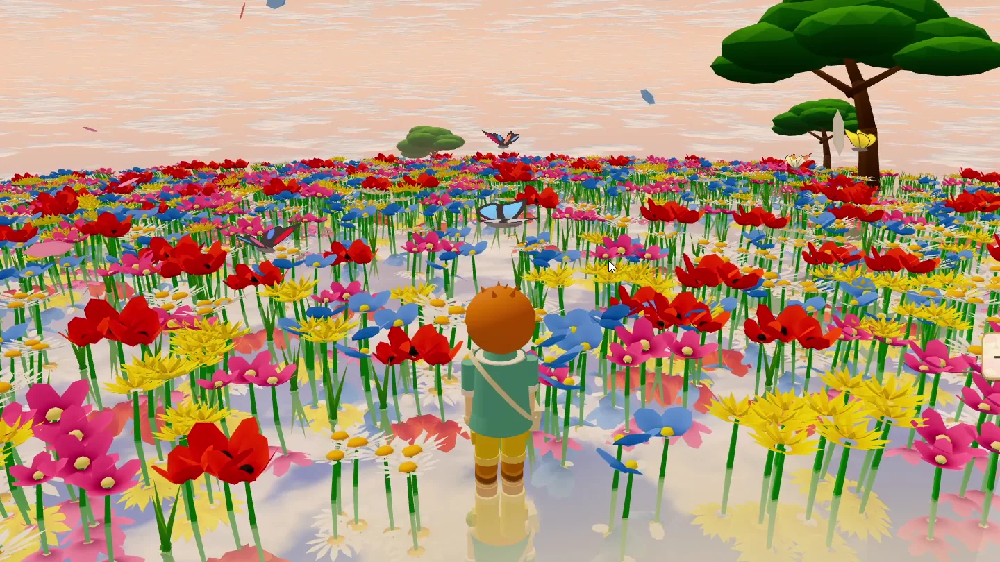
種田、養動物、整片花田Farm, raise animals, grow wildflowers
沒有體力條。休息不是懲罰，有時候只是因為海很好看，所以坐一下。
一款不是把土地榨乾，而是把它養回來的牧場遊戲。
A cozy island farm sim about bringing the land back to life.
第一週內容已可遊玩・免費網頁 Demo 準備中
這座島以前是四季都有遊客的觀光牧場。如今幾乎沒人住了，只剩村長梅貝爾一個人撐著雜貨店，向政府爭取補助，招募有專業的年輕人上島。
你是其中一個。
土地變貧了，海也不像從前。但只要好好照顧，它會慢慢長回來。

沒有體力條。休息不是懲罰，有時候只是因為海很好看，所以坐一下。
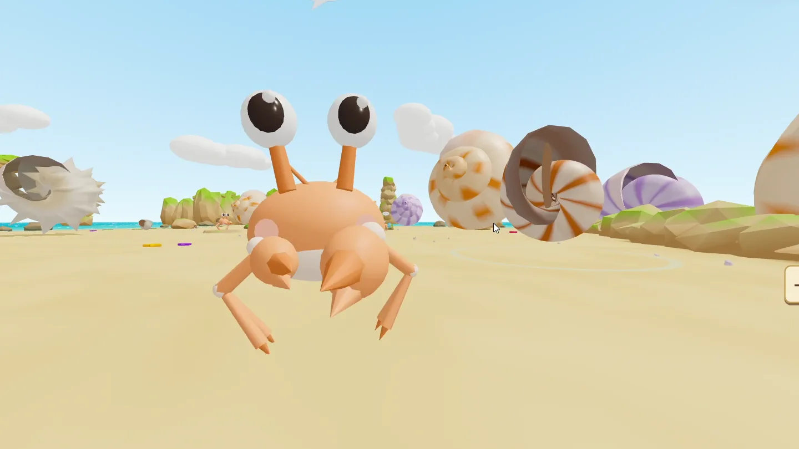
在生物塔裡幫寄居蟹按大小排隊換殼，在港口南邊的沙灘看海豹上岸。島上的小生物都有自己的生活。
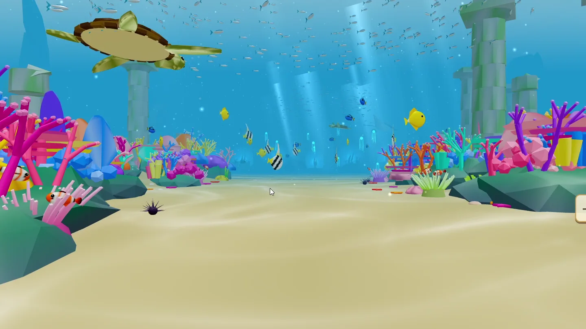
釣到的魚、遇見的海洋生物，會自動收進博物館。海底展廳和淡水展廳，會跟著你的探索一點一點熱鬧起來。
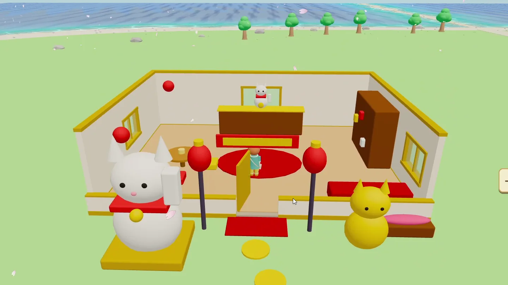
自己設計房子、家具、衣服和髮型。想住成什麼樣子，就住成什麼樣子。
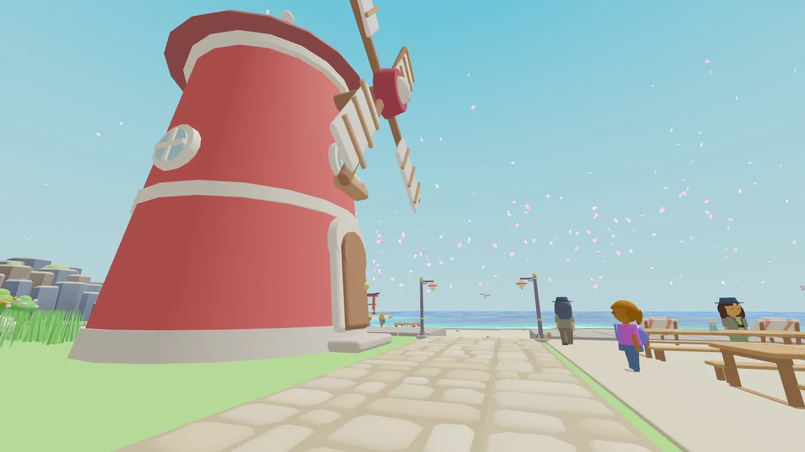
週六擺攤賣自己的作物和料理。觀光客回來了，島就熱鬧了。
春天的櫻花、夏天的颱風、冬天的雪和極光，還有某些夜晚才看得到的流星雨。
十位居民和兩位神明。每個人上島都有自己的理由，有專業、有夢想，也都帶著一點說不出口的事。
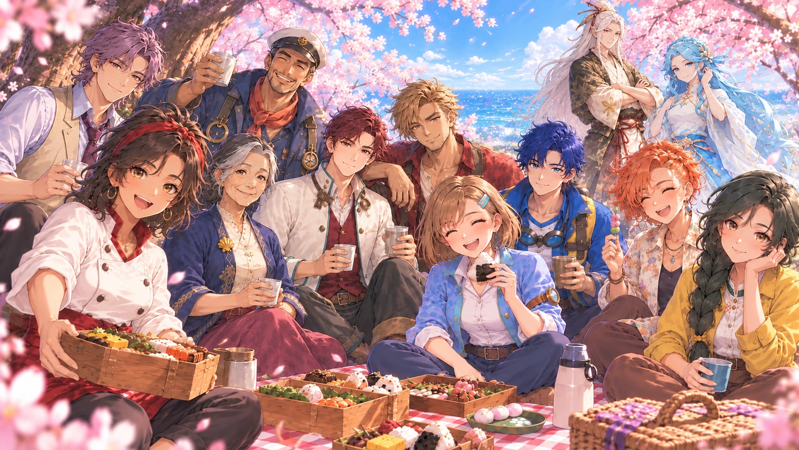
村長
守著和亡夫的回憶，也想看到島再熱鬧起來。
船長
守著他的船，也守著梅貝爾。
木匠
想親手蓋一個自己真正想留下來的地方。
廚師
想開一間大家能放心坐下來一起吃飯的店。
民宿管理員
想經營一間讓旅人會想再回來的民宿。
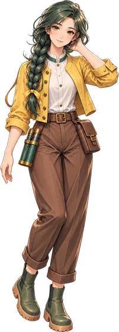
植物學者
想讓荒廢的土地重新長出完整的生態。
海洋學者
想證明受損的海洋生態可以被恢復。
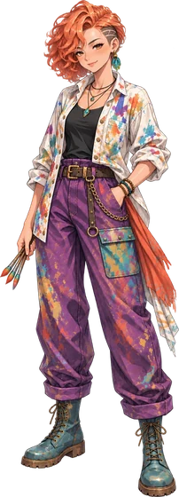
藝術家
想重新找到自己真正想畫的東西。
醫生
想做真正貼近生活的地方醫療。
護士
想讓居民敢開口求助，不必怕麻煩別人。
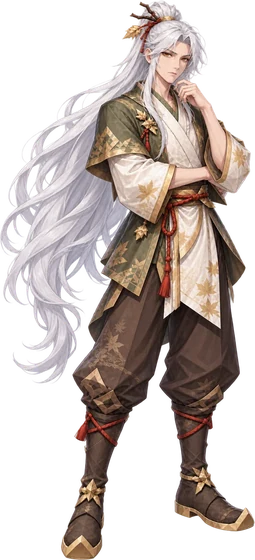
山神
平常待在山腰神壇，很難捉摸。
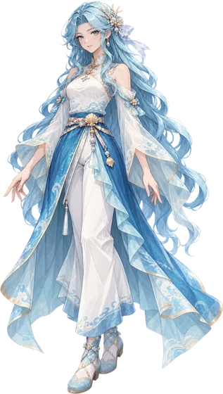
海神
常在海邊祠堂一帶，看著來往的船。
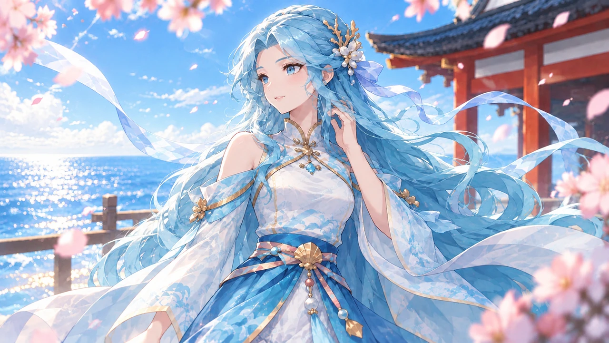
開始開發。一個人做程式、劇情和大部分的設計。
第一週（Day 1–7）可以完整玩完：八位新居民上島、兩位神明登場、第一次週六市集。
招募內部測試玩家，修 bug、調整新手體驗。
在 itch.io 推出免費網頁 Demo，電腦和手機都能玩。
Steam 與 itch.io 正式版（買斷制）。
支援平台：網頁（電腦、手機）、Windows。Mac 版還在研究，不保證會有。
Demo 開放、測試招募和開發日誌都會先在這些地方公布。
本專案部分程式碼開發過程中，使用了 Claude、GitHub Copilot、GPT（含免費版與 Plus）以及 Codex 等 AI 工具輔助撰寫與除錯。所有核心邏輯、遊戲機制與最終程式碼均經人工審查、調整與確認。
角色立繪、事件 CG、概念圖與部分開發用圖像，皆使用 GPT（Plus 付費方案）生成，並經人工後製與調整。部分美術與音效採用 Kenney (CC0) 開源資源包。
遊戲內部分背景音樂採用 Stocktune (付費商業授權 AI 生成音樂)，具備合法商業使用權。
以上所有 AI 生成與輔助內容均透過付費或合規渠道取得，具備合法商業使用權。遊戲核心設計、劇情、世界觀與最終成品均為原創。
CRITICAL NOTICE: This official, timestamped web repository serves as a formal public declaration of Prior Rights (在先權利) and Copyright protection under international intellectual property frameworks. Any bad-faith trademark registration or unauthorized commercial exploitation of these proprietary assets will face immediate legal opposition.
本公開網頁紀錄與內建之 Git 提交時間戳記（Commit Timestamps），在國際法律上具備不可竄改之新穎性證據效力。所有遊戲機制、視覺美術資產、劇情文本及上述名稱，皆屬創作者獨佔之智慧財產權，特此宣告以防範惡意搶註行為。